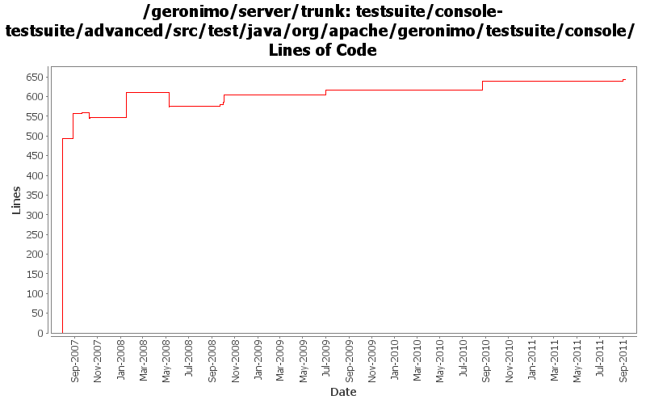

[root]/testsuite/console-testsuite/advanced/src/test/java/org/apache/geronimo/testsuite/console

| Author | Changes | Lines of Code | Lines per Change |
|---|---|---|---|
| Totals | 88 (100.0%) | 1481 (100.0%) | 16.8 |
| prasad | 15 (17.0%) | 807 (54.5%) | 53.8 |
| jdillon | 18 (20.5%) | 372 (25.1%) | 20.6 |
| gawor | 22 (25.0%) | 154 (10.4%) | 7.0 |
| xiaming | 20 (22.7%) | 98 (6.6%) | 4.9 |
| dwoods | 6 (6.8%) | 31 (2.1%) | 5.1 |
| djencks | 2 (2.3%) | 8 (0.5%) | 4.0 |
| xuhaihong | 4 (4.5%) | 6 (0.4%) | 1.5 |
| linsun | 1 (1.1%) | 5 (0.3%) | 5.0 |
Console-testsuite patch provided by Liu Jun
7 lines of code changed in 4 files:
Fix some link changes, provided by Liu Jun
1 lines of code changed in 1 file:
Revise console-testsuite, provided by Liu Jun
51 lines of code changed in 7 files:
GERONIMO-5546 update console testsuite to support the dojo navigation tree, provided by janel Zhang
39 lines of code changed in 8 files:
Update console test case due to some code changes of the user/group portlet
1 lines of code changed in 1 file:
test fix that should have been included with GERONIMO-4749. Please test before committing
2 lines of code changed in 1 file:
increase timeout a bit more... but probably something else is going on
1 lines of code changed in 1 file:
poll instead of waiting
12 lines of code changed in 1 file:
maybe it just needs more time
1 lines of code changed in 1 file:
might resolve some console-testsuite problems - still getting inconsistent results on jetty
2 lines of code changed in 1 file:
GERONIMO-4517 Apply unified message display style(G-4484) to javascript alert messages. Together with the localization of these messages.
Update the test case JMSResourcesTest.
2 lines of code changed in 1 file:
GERONIMO-4517 Apply unified message display style(G-4484) to javascript alert messages. Together with the localization of these messages. Update console test cases.
3 lines of code changed in 2 files:
GERONIMO-4484 Extraction, localization and display of messages generated in portlets. Applied common-message-openejb.patch, common-message-activemq.patch, common-message-debugviews.patch, common-message-plancreator.patch and common-message-sysdb.patch from Gang Yin. Also updated 2 console-testsuite DB tests to match modified message strings.
2 lines of code changed in 2 files:
GERONIMO-4484 Extraction, localization and display of messages generated in portlets. Fix breakage to the Install New Applications portlet due to a change in the message string displayed.
1 lines of code changed in 1 file:
GERONIMO-4337 upgrade to activemq 5.2. Reduced console functionality
3 lines of code changed in 1 file:
GERONIMO-4225 add additional testcases for datasource vs. database focused Run SQL portlet instances
24 lines of code changed in 2 files:
GERONIMO-4326 Update Repository List action in Plugins portlet is broken
5 lines of code changed in 1 file:
GERONIMO-4239, GERONIMO-4302. Fix more classpath issues in console, revert broken attempt to have client-system.jar self-install itself
5 lines of code changed in 1 file:
update testStartStopListener test to handle recent console changes
4 lines of code changed in 1 file:
update db manager test
1 lines of code changed in 1 file:
update test to reflect the name change of boilerplate assembly
2 lines of code changed in 1 file:
Fix up some more testsuite configuration
5 lines of code changed in 1 file:
Tidy up console-testsuite tests
298 lines of code changed in 9 files:
Use waitForPageLoad()
69 lines of code changed in 8 files:
basic test for plugin portlet to display the list of plugins installed on the server
64 lines of code changed in 1 file:
* edit is now the 3rd link in the row
2 lines of code changed in 1 file:
fix one more test
4 lines of code changed in 1 file:
fix more console tests
6 lines of code changed in 3 files:
let's not ignore selenium exceptions
0 lines of code changed in 6 files:
more reliable web connector tests
54 lines of code changed in 1 file:
fix console tests
3 lines of code changed in 2 files:
add selenium plugin and fix console test
2 lines of code changed in 1 file:
* fixed failing testcases
* Thanx Viet
312 lines of code changed in 7 files:
* adding advance console testsuite
* Thanks to Viet Nguyen
493 lines of code changed in 7 files: